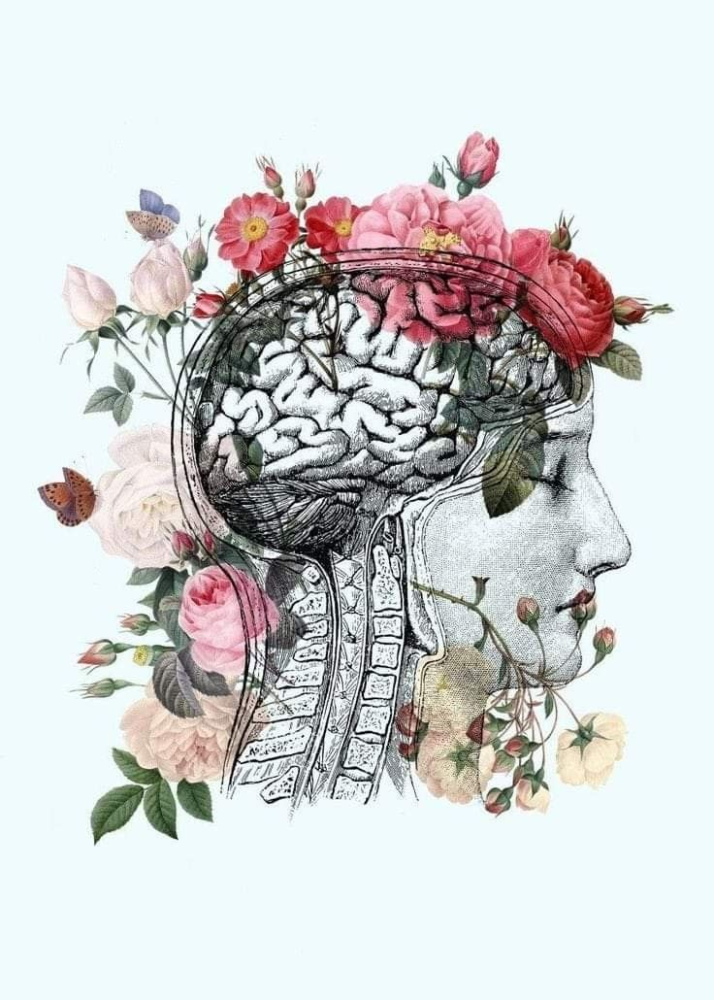

understand Where your mind blooms. Zenene brings reflection, conversation, creativity and calm into one gentle space. 
reflect Put your thoughts somewhere. A private place to write, notice and understand what is happening inside your mind. a place to put your thoughts
talk Someone to talk to. Vera gives you somewhere to put the thoughts that are difficult to say out loud. VERA listen notice understand